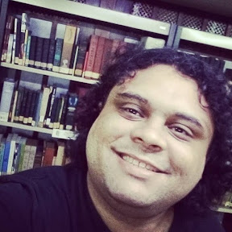

<section class="text-gray-600 body-font">
    <div class="container px-5 py-23 mx-auto flex flex-col">      
        <div class="flex flex-col sm:flex-row mt-10">
          <div class="sm:w-1/3 text-center sm:pr-8 sm:py-8">            
                                                       
          <div class="flex flex-col items-center text-center justify-center">
              <h2 class="font-medium title-font mt-4 text-gray-900 text-lg">Delso Ferreira</h2>
              <div class="w-12 h-1 bg-green-500 rounded mt-2 mb-4"></div>
              <p class="text-base">"The only way to achieve the impossible is to believe it is possible" - Lewis Carroll</p>
            </div>
          </div>
          <div class="sm:w-2/3 sm:pl-8 sm:py-8 sm:border-l border-gray-200 sm:border-t-0 border-t mt-4 pt-4 sm:mt-0 text-center sm:text-justify">
            <p class="leading-relaxed text-lg mb-4">
              I'm a guy born in Rio de Janeiro, who discovered a new passion for web development after a bachelor's degree in archival science. I was always reluctant to enter the world of technology, believing it wasn't for me. However, this hesitation was replaced by enthusiasm when I discovered the world of possibilities that web development offered me.<br><br>
              The feeling of creating something functional from scratch and the ability to convey ideas through code are elements that deeply captivate me. My career transition is marked by a constant desire to learn and evolve, always striving for self-improvement.<br><br>
              During this journey, I have developed a solid foundation in various technologies and tools, and I am always looking for new challenges that allow me to grow professionally. I value collaboration and knowledge sharing, as I believe this is how we can build innovative and efficient solutions.<br><br>
              Besides web development, I have an unconditional love for pizza. Don't forget... Pizza, everything is better with pizza!
            </p>            
          </div>
        </div>
      </div>          
  </section>